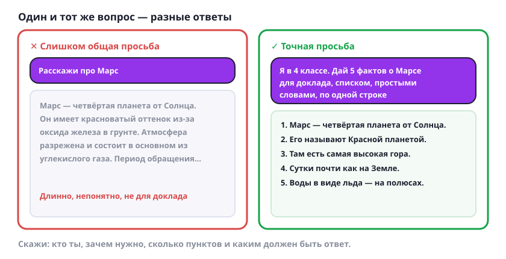

Как спросить, чтобы получить хороший ответ
Один и тот же вопрос можно задать по-разному — и получить или кашу, или именно то, что нужно.

Четыре шага к хорошему ответу
- Скажи, кто ты и зачем. «Я в 4 классе, готовлю доклад» — и ответ будет понятным, а не как в научной статье.
- Скажи, сколько и чего нужно. «Пять фактов», «три предложения», «список», «таблица». Без этого ИИ напишет столько, сколько сам решит.
- Попроси нужный вид. Простыми словами, по одной строке, с примерами — как тебе удобнее читать.
- Не понравилось — переспроси. «Короче», «проще», «другими словами», «приведи пример». Переспрашивать можно сколько угодно, это нормально.
Попробуй сам: попроси пять фактов о планете Марс для доклада в 4 классе, списком, по одной строке. Потом попроси то же самое, но ещё проще.
Как в магазине: «дайте хлеб» и «дайте батон нарезной» — получишь разное. Чем точнее просьба, тем точнее ответ.